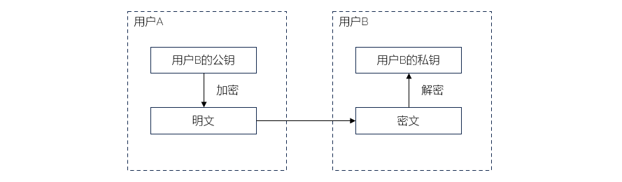
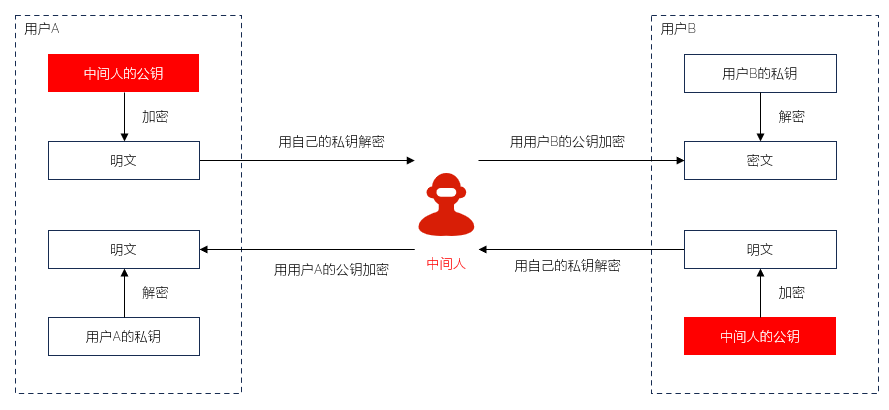
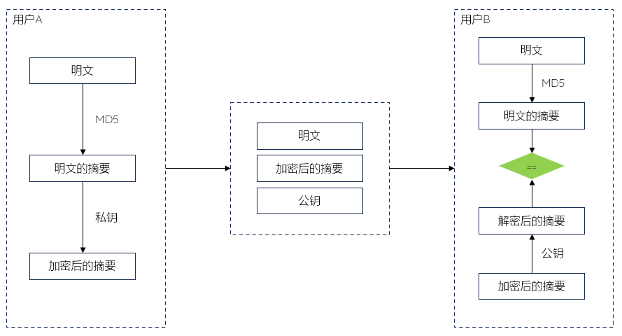

数字签名 Signature
场景需求
用户A向用户B发信息
用户B需要确认：信息是A发出的，且没有被篡改
技术支撑
非对称加密
消息摘要
非对称加密
加密和解密使用不同的密钥
通常由接收方生成公开密钥和私有密钥密钥对，并发送公钥给发送方
用公钥加密，用私钥解密：私钥带有个人特征，可用于数字签名的验证
不存在密钥配送问题，容易导致中间人攻击
完整的通信过程，实际上需要2对密钥-4个密钥
加密过程
用户A向用户B发送消息

加密过程
主要算法
RSA：如X.509数字证书
. 名字由三位开发者：Ron Rivest、Adi Shamir和Leonard Adleman的姓氏的首字母组成
ECC椭圆曲线：如国密SM2
中间人攻击
Man in the Middle Attack
中间人攻击指的是在通信双方的通道上，混入攻击者：对接收方伪装成发送者，对放送放伪装成接收者
他监听到双方发送公钥时，偷偷将消息篡改，发送自己的公钥给双方。然后自己则保存下来双方的公钥
双方通信时，加密使用的都是攻击者的公钥；攻击者都可以拦截后解密，并且篡改信息内容再用对方公钥加密并发送
接收方拿到的是篡改后的信息
发送方和接收方都是在和中间人通信
应对措施：要防范中间人，我们需要使用公钥证书

中间人攻击
消息摘要
MD5 - Message Digest Algorithm
接受任意长度的消息作为输入，并返回一个固定长度|128bit的摘要值作为输出，用于验证原始消息
单向：由明文可以求除摘要；反过来，很难通过摘要反推出明文
防止篡改；用于完整性保护
场景：游戏客户端、用户登录
在线工具：
MD5MA
SHA - Secure Hash Algorithm
安全散列算法
美国国家安全局NSA设计，并由美国国家标准与技术研究院NIST发布
SHA-1
. 160bit
. Google宣布攻破SHA-1
SHA-256
SHA-384
SHA-512
签名实现
用户A采用摘要算法对消息计算得到摘要，用自己私钥加密，将加密的摘要和消息连同自己的公钥一起发给用户B
用户B先用用户A的公钥解密；如果能解密，则可以确定消息是用户A发出的；解密后得到摘要1
用户B再用同样的摘要算法对明文计算，得到摘要2；如果摘要1和摘要2相等，则能确定消息未被篡改

签名过程
[漏洞]